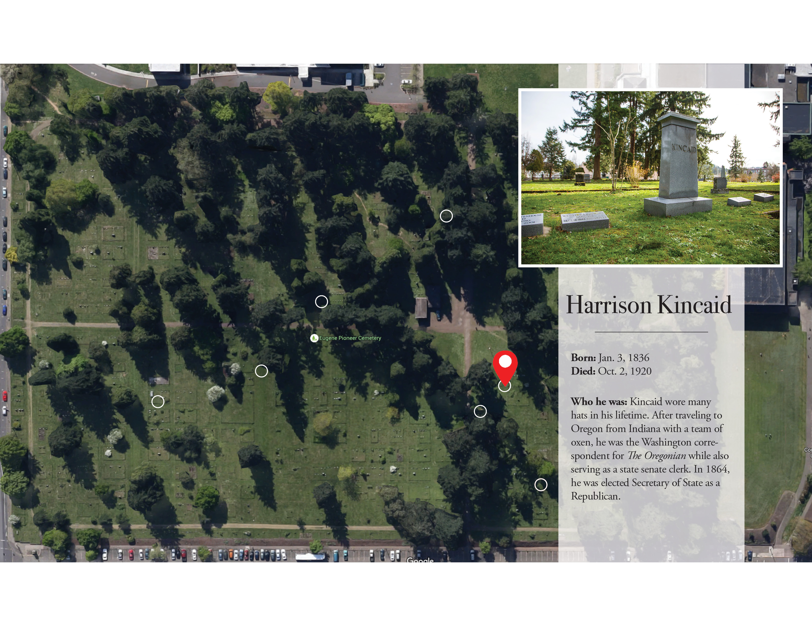
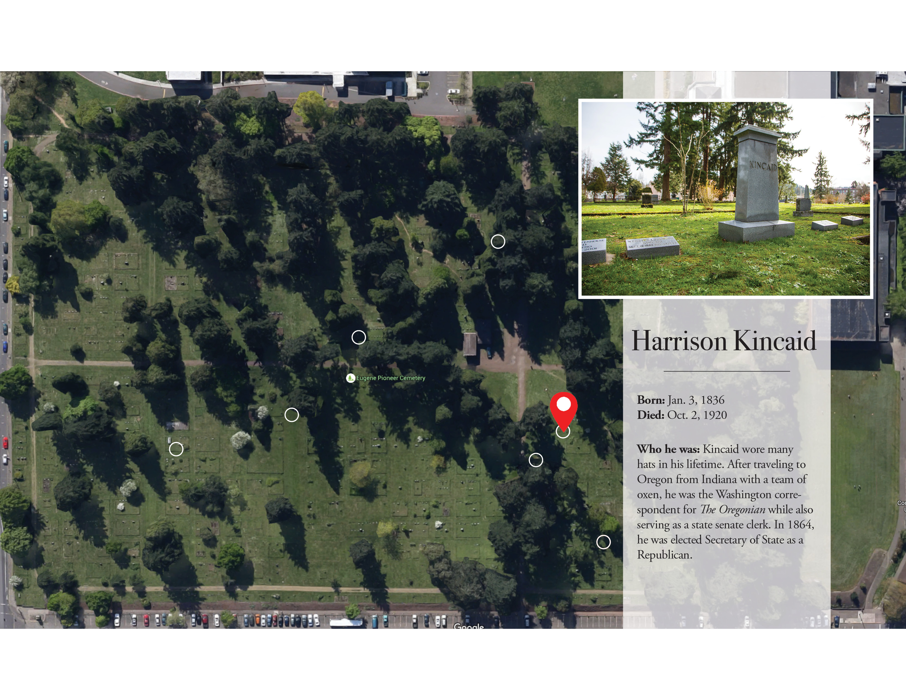

George Dull
Grounds Keeper


Eugene Pioneer Cemetery
You walk through it every day.
How much do you actually know about it?
In the midst of a noisy university, George Dull lives in one of the quietest neighborhoods around: surrounded by more than 4,000 graves in the center of the Eugene Pioneer Cemetery.
“I get along great with my neighbors,” he said.

In his 24-year span as a grounds caretaker living in a trailer in the cemetery, Dull hasn’t had many unpleasant encounters with people passing through. Still, he doesn’t recommend walking through it at night. The grounds are deliberately left poorly lit to discourage people from doing so, said Kelly McIver, public information officer with the University of Oregon Police Department.
McIver said the cemetery’s reputation as a crime hotspot may be exaggerated by its function. Personal crimes like assaults and robberies are most likely to happen in high-traffic areas, but the cemetery is fairly empty at night.
For some students, it’s a popular place to run. Some simply ignore it. But the 16.5-acre lot, established in 1873, remains in large part a mystery to the students who walk through it.
But to a small group of men and women with deep roots in the Eugene community, the Pioneer Cemetery is familiar ground. They work dozens of hours each month beyond the sight of students, fueled by a sense of responsibility to preserve those buried there. For some of the volunteers, that includes their own ancestors.

Master Gardener Gary Jordan cuts clippings from a rosebush in the garden.

About two to three people are still buried in the cemetery each year.

Board Member Helen Liu tends to the cemetery's heritage roses throughout the year.
One of those volunteers is Quentin Holmes, whose family ties to Eugene and the cemetery precede him by three generations — with the headstones to prove it. Holmes has been the president of the Eugene Pioneer Cemetery Association board since 2006; Holmes’ great-grandfather Burt Lake is buried in the cemetery next to Lake’s first wife and sister. When Holmes was growing up, his mother frequently sent him to clean up the plot. Other board members with buried ancestors have similar stories from their childhoods.

“Back then, that was just what people did,” Holmes said.
The cemetery association’s historian, Dorothy Brandner, is one of the few board members without family buried in the cemetery. But for years she has sifted through marriage licenses, death certificates, birth certificates and census reports on a mission to identify the estimated 4,200 people at rest in the Pioneer Cemetery.
“It’s like a puzzle,” Brandner said about her work. “I like history and piecing the past together.”
Brandner accredits Bob Carmichael for her initial involvement. Carmichael serves as the treasurer of the cemetery’s endowment fund, and for several decades has run a local dental practice while managing a 300-tree Christmas tree farm. He first urged Brandner to get involved with the board at a dental appointment in 2008.
Like Holmes, Carmichael tended to relatives’ graves while growing up. He also received his first, although unwilling, kiss in the cemetery in the fourth grade while walking a female classmate home from school.
Several other board members have longstanding links to the cemetery, but for Holmes, Brandner and Carmichael, it has remained a source of common ground between them. Their connections to Eugene and each other have evolved over the decades.
They all went to South Eugene High School together, though they graduated in different years. Holmes left Oregon for several years; Brandner was a nurse at Sacred Heart. When Carmichael was a member of Kappa Sigma at the UO studying dentistry, he would go into the cemetery to seek solace. Today, he still visits frequently.

“I look at the gravesites like I did when I was a kid,” Carmichael said. “I feel good when I leave ... I can leave there and know I can make a difference because I’m still alive.”
The three of them are continuing a legacy of protecting the 143-year-old cemetery from changing times. Since the cemetery association formed in 1930, the board has played a crucial role in preserving the graves. For example, in the late 1960s, the university wanted to expand onto the cemetery’s north end, which would have required about 1,100 occupied graves to be dug up and moved.
Cemetery association members and the board fought the proposal, which had to be settled through the state legislature. UO tried to compromise: One memorable proposal made by a state representative suggested that the university construct a building over the cemetery, raised above the ground on stilts. A cemetery board member said at the time that the proposal “merits some consideration — but not much.”
The cemetery was eventually saved because plot owners refused to surrender their land and Holmes’ mother discovered that a Medal of Honor winner, Louis Renninger, was buried there. Medal of Honor winners cannot be moved after they are buried, nor can the cemeteries in which they are buried be changed for some other purpose, according to the board. The university and cemetery have coexisted peacefully since then, aside from a few scuffles over lighting and fencing.
Click on a name to see where historical figures are buried in the cemetery.


 



In more recent years, the board decided to clear away much of the underbrush and low-hanging branches that used to obscure the view through the cemetery, making it a less welcoming environment for illicit activities.
The work involved with the cemetery is often physically demanding and requires long hours, which places a heavy burden on a board that consists of members mostly over the age of 70. Students sometimes get involved through community service or research projects, and the board is open to proposals for both. Holmes said that recruiting younger people to get involved is important when looking toward the future.
“You’ve located our Achilles’ heel,” he said. “We have to take our old ways and recast them.”
Dull is younger than the board members, but he also feels the strain of maintaining the cemetery at his age. If asked how long he plans to stay, his response is blunt:
“I don’t know. Till I die, I guess,” he said.
In fact, he’ll be there longer. For his 20th work anniversary, the cemetery association gave Dull his own plot toward the northeastern end of the cemetery, with a clear view of McArthur Court.
“They got me for eternity,” Dull said, as his scuffed tennis shoes sink slightly into the damp green lawn.